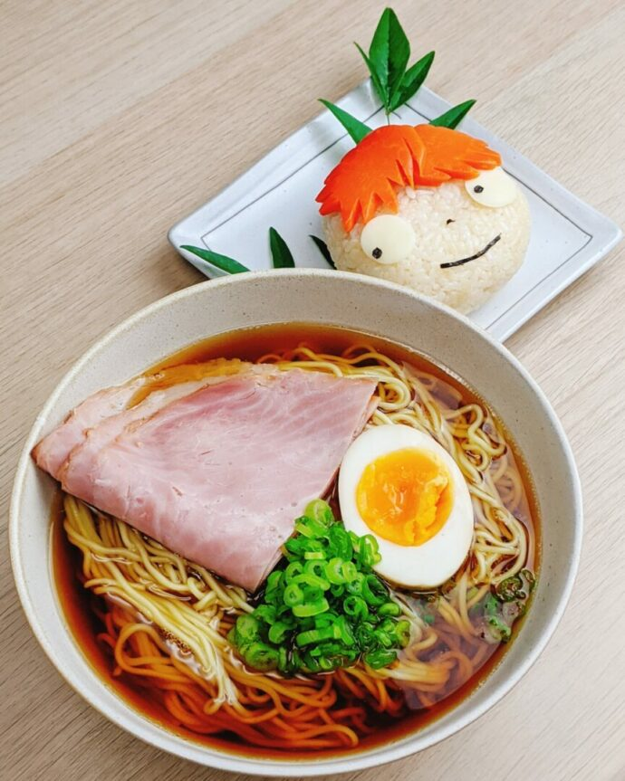

Ponyo's Ham Ramen Recipe

Dive into the Whimsical World of Studio Ghibli: Bring to life Lisa's heartwarming Ham Ramen from the touching anime "Ponyo". It's so authentic, it might just bring a tear to your eye!
Ingredients
- Ramen: 1 package Chicken Ramen (brand of your choice)
- Water: 400ml, boiling
- Cooked Ham: 1 slice, cut in half
- Hard Boiled Egg: 1/2
- Green Onion: Chopped, to taste
Simple Steps to Deliciousness
- Set water to boil.
- Transfer noodles to a ramen bowl. Pour boiling water over them, cover, and set a timer for three minutes.
- After a minute, give the noodles a quick stir, then top with ham, egg, and green onion. Cover and patiently await the timer's signal.
Return to main page